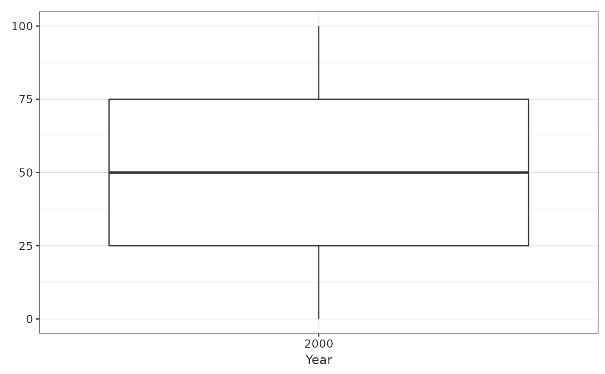

![[Experimental]](figures/lifecycle-experimental.svg)
Usage
boxPlot(
result,
x,
lower = "q25",
middle = "median",
upper = "q75",
ymin = "min",
ymax = "max",
facet = NULL,
colour = NULL,
label = character()
)Arguments
- result
A
<summarised_result>object.- x
Columns to use as x axes.
- lower
Estimate name for the lower quantile of the box.
- middle
Estimate name for the middle line of the box.
- upper
Estimate name for the upper quantile of the box.
- ymin
Estimate name for the lower limit of the bars.
- ymax
Estimate name for the upper limit of the bars.
- facet
Variables to facet by, a formula can be provided to specify which variables should be used as rows and which ones as columns.
- colour
Columns to use to determine the colors.
- label
Character vector with the columns to display interactively in
plotly.
Examples
dplyr::tibble(year = "2000", q25 = 25, median = 50, q75 = 75, min = 0, max = 100) |>
boxPlot(x = "year")
